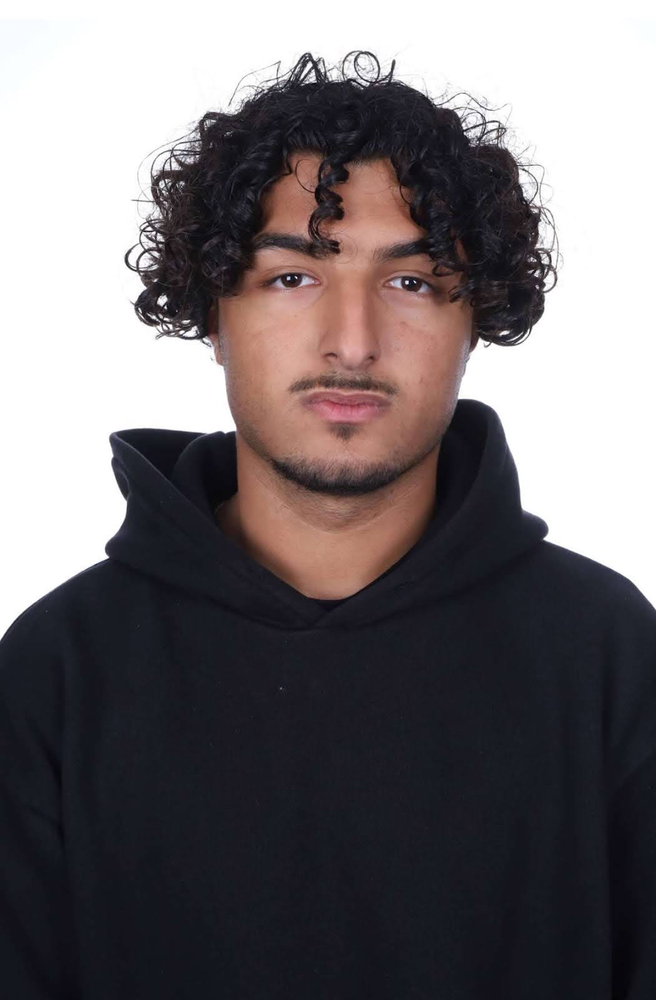
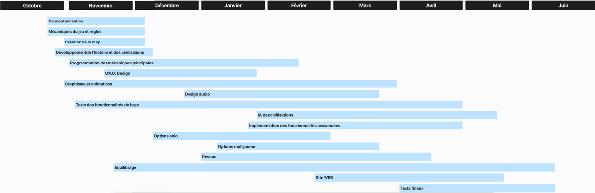

History
In the not-so-distant future, the world order collapsed. Decades of fragile alliances, cyber-warfare, and resource hoarding led to a global fracture. Nations turned inward, their leaders desperate to rebuild power in a world where diplomacy was no longer currency — strength was. From these ashes rose a new doctrine: Rebuild. Expand. Conquer. The game was born out of this fictional future — a simulation of what could happen when balance breaks and survival becomes a contest of strategy, vision, and force. It challenges you to step into the shoes of a modern leader in a chaotic world. Will you invest in your people, build a lasting empire, or focus on military might to dominate rivals? This game was created to test what kind of leader you are — not in theory, but in action. History has been erased. You are writing the new one.Members
Elliot RONSIN : I'm the Team Leader of our team, in charge of coordination and project management. I'm also in charge of site design and maintenance, sound design for our video game, and development of the single-player option.
Anir BELGUENDOUZ : I am responsible for the conceptualization, game mechanics and rules of our strategy game projects. 
Gregory-Lucas CLEMENT: I specialize in UI/UX Design, graphics and animation.
Gregoire MASSON : I'm an expert at implementing advanced features and multiplayer mode;
Timeline

Problems / Solutions
1.We encountered a problem during development: the mouse cursor couldn’t detect which region it was hovering over. To solve this, we came up with a clever solution — we assigned each region a unique secondary color, using variations of black in RGB (for example, RGB values like (1,1,1), (2,2,2), etc.). By rendering this hidden map in the background, the game could detect the exact region based on the RGB value beneath the cursor. This allowed us to accurately identify regions without relying on complex hitbox systems.
2. We had an issue with AI interactions — we didn’t know how to make the countries act on their own without direct input. To solve this, we created a graph-based system where each node represents a region. The AI thinks region by region: for each region it controls, it checks the neighboring regions. If a neighboring region doesn’t belong to the same country, the AI looks at the alliance score between the two. If the alliance score is low, the AI will decide to attack. This system gave our AI strategic autonomy while keeping it understandable and adaptable.
3. We also faced a major communication problem within the team. Tasks weren’t clearly assigned, and misunderstandings often slowed down progress. To fix this, we started schedule short weekly meetings where everyone could share updates and blockers. This helped us stay aligned, distribute work more efficiently, and move forward as a team.
4. We had trouble agreeing on certain aspects of the project — especially design choices and priorities. It sometimes slowed us down and created tension within the team. To solve this, we decided to vote on key decisions and assign a “team lead” for each part of the project. This helped us move forward faster while still respecting everyone’s ideas.
Back to home page